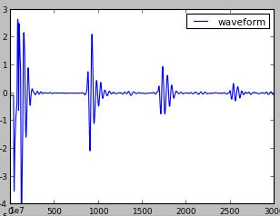
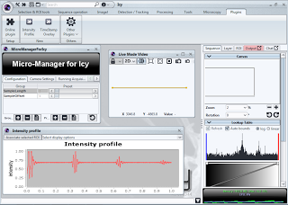
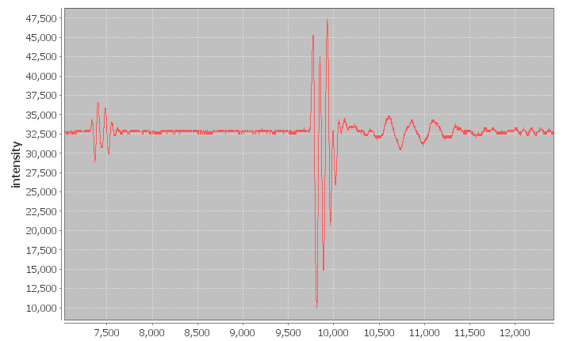
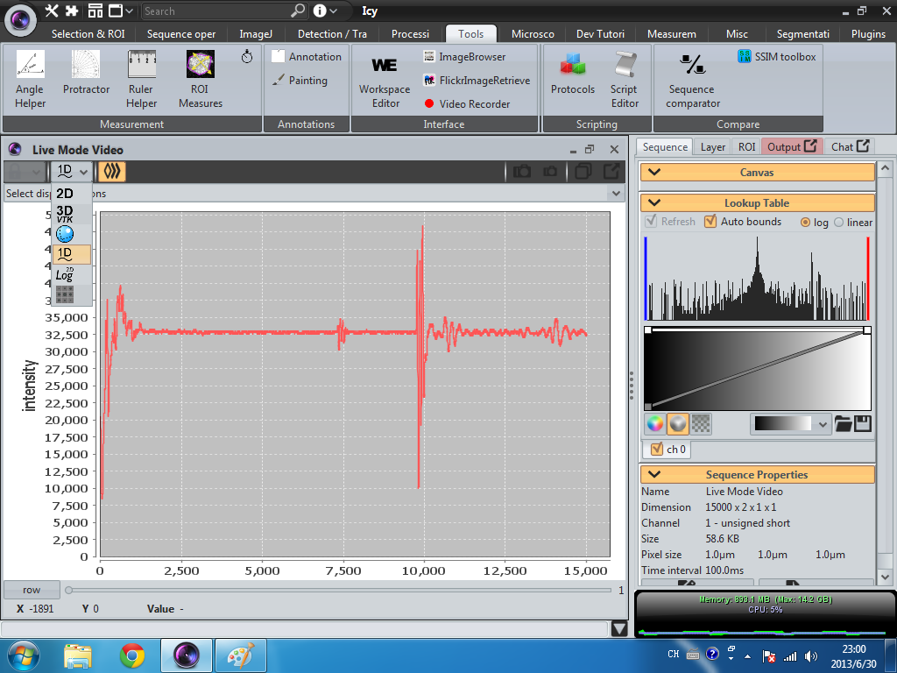
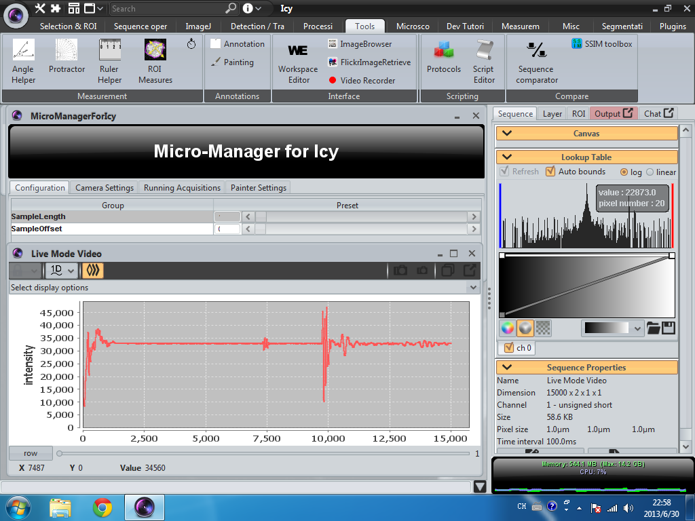

1D signal presentation in Icy
Motivation
Icy is designed for 2D+ image data processing, but in NDE, we often get 1D signal like ultrasonic waveform. The following picture shows a sample of typical ultrasonic waveform.

Solution
So if we want to process 1d signal, or acquisite 1d signal in Micro-Manager within Icy, we need to figure out some way to presente 1d signal in Icy. Icy itself have Jfreechart included in its library, and there also some plugins like Intensity Profile can draw a profile of a line of pixel intensity. So a intuitive idea is acqusite the 1d signal as a 1-row image using Micro-Manager for Icy plugin and then plot the intensity profile of the 1-row image. The following image demostrate this idea.

The Plugin -- Chart1DCanvas
Following this idea, I fired a thread in the forum of Icy. Then I got some suggestions from Fabrice and Stephane. After some coding work, I finally implemented a canvas plugin named Chart1DCanvas which can actually do the 1d signal representation work. This plugin will be act as a basis to the following NDE applications. Here goes a screen shot of the plugin.



With this plugin, Icy will show a 1d signal in native way which actually is canvas. We can use the canvas to show all kinds of waveforms such as eddy current and ultrasonic etc..